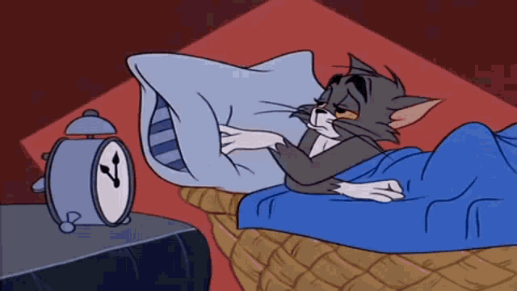

BONJOUR À TOUS, BIENVENUE SUR MON SITE
Qui suis-je :
Bonjour à tous, je m’appelle Abdullah Rizwan.Je suis étudiant en licence d’informatique à l’Université Paris 8. Depuis l'âge de 15 ans, j'ai toujours voulu créer mon propre site Web, j'ai donc créé deux ou trois sites Web pour mes projets scolaires, mais je n'ai jamais créé mon propre site Web, alors aujourd'hui je crée mon premier propre site Web.
Ce que je veux devenir :
Je veux devenir un développeur à temps plein capable de créer des sites web de haute qualité, des applications, des jeux etc.

Ma routine quotidienne :
Je me réveille à 7 heures du matin.Ensuite je prends mon petit-déjeuner,généralement composé de thé, de pain, d'œufs et d'une pomme.À 8 heure, je quitte la maison pour aller à l'université .Normalement je prends le bus pour aller à l'université .J'etudie l'informatique à l'université Paris 8.
Mes cours commencent à 9h et se terminent à 12h . Ensuite je déjeune,et après le déjeuner je vais aux cours de l'après-midi. les cours de l'après-midi se terminent vers 18 h .Après les cours ,j'arrive généralement chez moi vers 18 h 40 puis je dîne avec ma famille et Je regarde la télévision. Après le dîner je fais quelques révisions puis je dors .
